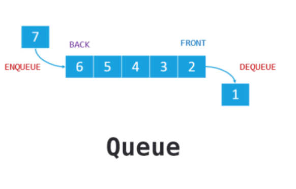
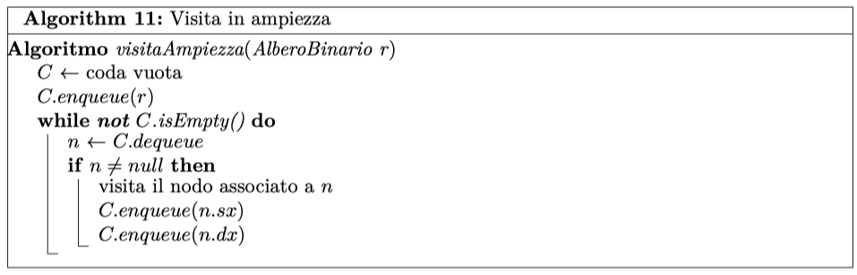
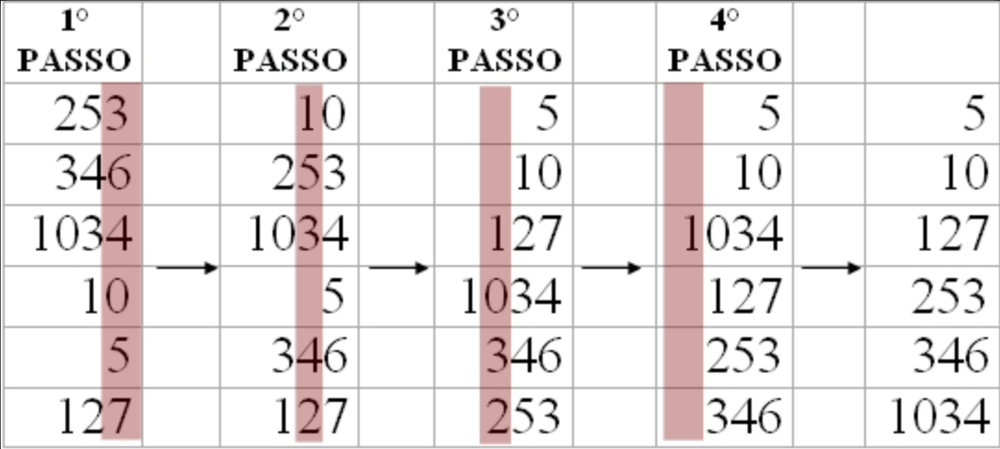

Algoritmi e Strutture Dati
Dispense non ufficiali

Le seguenti dispense nascono con lo scopo di fornire ai colleghi una fonte contenente un riassunto di tutti gli argomenti trattati nel corso di algoritmi e strutture dati tenuto dal professor Pighizzini. Per la creazione sono stati utilizzati i documenti PDF forniti dal professore dal quale sono stati estratti i frammenti di codice degli algoritmi e la loro spiegazione. Tali informazioni sono poi state integrate con appunti presi personalmente durante le lezioni e da materiale condiviso da altri colleghi.
Queste dispense non sostituiscono il libro di testo e i materiali ufficiali forniti dal professore, bensì sono da considerarsi unicamente uno strumento integrativo.
Parte del contenuto di queste dispense è stato riprodotto dai documenti del professor Pighizzini, che ne detiene la proprietà, per scopi istituzionali, come indicato dalla dicitura di copyrigth che viene qui riportata per intero.
©2022 Giovanni Pighizzini
Il contenuto di queste pagine è protetto dalle leggi sul copyright e dalle disposizioni dei trattati internazionali. Il titolo ed i copyright relativi alle pagine sono di proprietà dell’autore. Le pagine possono essere riprodotte ed utilizzate liberamente dagli studenti, dagli istituti di ricerca, scolastici e universitari afferenti al Ministero dell’Istruzione e al Ministero dell’Università e della Ricerca, per scopi istituzionali, non a fine di lucro. Ogni altro utilizzo o riproduzione (ivi incluse, ma non limitatamente a, le riproduzioni a mezzo stampa, su supporti magnetici o su reti di calcolatori) in toto o in parte è vietata, se non esplicitamente autorizzata per iscritto, a priori, da parte dell’autore. L’informazione contenuta in queste pagine è ritenuta essere accurata alla data della pubblicazione. Essa è fornita per scopi meramente didattici e non per essere utilizzata in progetti di impianti, prodotti, ecc. L’informazione contenuta in queste pagine è soggetta a cambiamenti senza preavviso. L’autore non si assume alcuna responsabilità per il contenuto di queste pagine (ivi incluse, ma non limitatamente a, la correttezza, completezza, applicabilità ed aggiornamento dell’informazione). In ogni caso non può essere dichiarata conformità all’informazione contenuta in queste pagine. In ogni caso questa nota di copyright non deve mai essere rimossa e deve essere riportata anche in utilizzi parziali.
Un algoritmo è una strategia o un procedimento per risolvere un problema, uno schema o un procedimento sistematico di calcolo. Formalmente:
Un algoritmo è un insieme ordinato e finito di passi eseguibili e non ambigui che definiscono un procedimento che termina
Matematicamente un algoritmo può essere visto come una funzione
\(f_a:D_I \to D_S\)
dove \(D_I\) rappresenta il
dominio delle istanze e \(D_S\) il dominio delle
soluzioni.
L’algoritmica si occupa di:
Risoluzione di problemi \(\rightarrow\) Sintesi
Trovare una strategia buona per risolvere i problemi \(\rightarrow\) Analisi efficienza
Stabilire se un problema è facile o difficile \(\rightarrow\) Classificazione della complessità dei problemi
Studio delle strutture dati utilizzate
Definizione di nuovi modelli di calcolo
L’algoritmica viene studiata per scrivere programmi. Ha due aspetti:
Pratico: un computer è inutile senza algoritmi e programmi
Teorico: gli algoritmi sono la base dell’informatica, sono uno strumento mentale e metodologico per risolvere i problemi.
Per scrivere gli algoritmi useremo uno pseudocodice con strutture di controllo "Algol-like"

Esistono varie metodologie per progettare algoritmi. In base al tipo di utilizzo e alle operazioni che dovrò effettuare utilizzo strutture dati differenti. L’analisi e la progettazione di algoritmi si basano fondamentalmente su due fattori:
Correttezza: dato un algoritmo \(a\) e un problema \(P\), dimostrare che \(a\) risolve \(P\)
Efficienza: valutare la complessità di un algoritmo e la quantità di risorse utilizzate(tempo, spazio, energia, rete, ecc...)
Per eseguire l’analisi di un algoritmo posso:
Far girare il programma (\(testing\)) \(\rightarrow\) valutazione a
posteriori
Questo approccio ha alcuni problemi:
Possono esistere infiniti ingressi possibili
costo della codifica elevato
Stima in fase di progettazione \(\rightarrow\) valutazione a
priori
Per stimare il consumo di tempo di un programma assumo che ogni linea di
codice costi tempo unitario.
Siano \(f\) e \(g\) due funzioni:
\(f,g: \mathbb{N} \to \mathbb{R^+}\)
\(f(n)\) è O-grande di \(g(n)\) se \(\exists c > 0\), \(n_0 \in \mathbb{N}\) \(|\) \(\forall n > n_0\): \(f(n) \le c \cdot g(n)\)
\(f(n)\) è \(\Omega\)-grande di \(g(n)\) se \(\exists c > 0\), \(n_0 \in \mathbb{N}\) \(|\) \(\forall n > n_0\): \(f(n) \ge c \cdot g(n)\)
\(f(n)\) è \(\Theta\)-grande di \(g(n)\) se \(\exists c, d > 0\), \(n_0 \in \mathbb{N}\) \(|\) \(\forall n > n_0\): \(c \cdot g(n) \le f(n) \le d \cdot g(n)\)
Suppongo di avere un algoritmo che trova il minimo in una sequenza di dati.
Se la sequenza è lunga n elementi allora
vengono fatti n-1 confronti ed un numero di
assegnamenti compreso tra n e
2n.
Assumendo che queste operazioni vengano effettuate in tempo costante il
tempo è \(O(n)\), quindi posso dire che
è \(\Theta(n)\).
Ogni istruzione elementare utilizza un’unità di tempo indipendentemente dalla grandezza degli operandi.
Ogni variabile elementare utilizza un’unità di spazio indipendentemente dal valore contenuto.
Il tempo di calcolo di ciascuna operazione è proporzionale alla lunghezza dei valori coinvolti.
Input: array \(A\), elemento \(x\)
Output:
indice \(i\) t.c. \(A[i]\) = \(x\)
-1 se \(A\) non contiene \(x\)
Posso rendere l’algoritmo più "intelligente" cercando a partire dal fondo. In questo modo se l’elemento non è nell’array l’indice diventa automaticamente -1.
Tempo: \(\Theta(n)\)
Se ho un array ordinato posso usare un algoritmo di ricerca binaria.
Indici degli array
Quando si definisce un array (in questo caso nei parametri degli
algoritmi o della funzione), il range di indici viene indicato qualora
sia rilevante per la scrittura dell’algoritmo. Quando non sia rilevante
o sia chiaro dal contesto, il range viene omesso (come, in questo
esempio, per il parametro A della funzione ricercaRic).
Operatori logici
Assumiamo che per congiunzione (and) e
disgiunzione (or) sia utilizzata la
lazy-evaluation. Pertanto in una condizione della
forma \(a\)
and \(b\)
la condizione \(b\) viene valutata solo
se \(a\) è vera, mentre in una
condizione della forma \(a\)
or \(b\)
la seconda viene valutata solo se \(a\)
è falsa.
Passaggio di parametri
Assumiamo che per i tipi semplici il passaggio di parametro avvenga
sempre per valore mentre per i tipi strutturati
avvenga il passaggio per riferimento.
In questa sezione vediamo alcuni algoritmi che servono per ordinare
vettori di strutture complesse come oggetti o record. Un particolare
campo è scelto come chiave per
l’ordinamento. Studieremo principalmente algoritmi di ordinamento basati
su confronti tra chiavi e stimeremo la complessità di questi algoritmi
in funzione della lunghezza del vettore da ordinare, calcolando prima di
tutto il numero di confronti eseguiti.
Un algoritmo di ordinamento è detto
stabile se preserva l’ordine relativo tra
record con la medesima chiave. Esistono due tipologie di
ordinamento:
Ordinamento interno:
I dati da ordinare sono in memoria centrale \(\rightarrow\) accesso diretto agli
elementi
Ordinamento esterno:
I dati da ordinare sono in memoria di massa \(\rightarrow\) accesso ai blocchi di dati
con possibile lentezza dovuta dall’hardware dalle periferiche.
Vedremo principalmente tecniche di ordinamento interno, tra cui troviamo tecniche
Elementari
Utilizzano nel caso peggiore un numero quadratico di confronti
Per selezione (SelectionSort)
Per inserimento (InsertionSort)
A bolle (BubbleSort)
Avanzate
Utilizzano un numero di confronti dell’ordine di \(n \log n\) (tranne
QuickSort, il cui caso peggiore risulta però molto
raro)
Per fusione (MergeSort)
Veloce (QuickSort)
Basato su heap (HeapSort)
Prima del passo principale \(k\), con \(k = 0,\dots, n - 1\), i primi \(k\) elementi dell’array sono al loro posto definitivo, cioè sono ordinati tra loro e sono minori o uguali degli elementi successivi
Si seleziona l’elemento che andrà collocato in posizione \(k\), cioè il minimo della parte non ordinata (quindi il minimo tra \(A[k],\dots,A[n-1]\))
Lo si colloca in posizione \(k\), scambiandolo con l’elemento ivi presente
In questo modo, dopo il passo principale \(k\), i primi \(k\) elementi risultano collocati nella loro posizione definitiva.
Dopo il passo \(n - 2\) la parte non ordinata contiene solo un elemento e, in base al punto 1, questo è maggiore o uguale dei precedenti, e dunque si trova nella sua posizione definitiva. Pertanto non è necessario eseguire il passo \(n - 1\)
Nell’iterazione \(k\) del ciclo principale viene ricercato il minimo della porzione di vettore da posizione \(k\) a posizione \(n - 1\), effettuando quindi \(n-k-1\) confronti. Sommando su tutte le iterazioni \(k\) del ciclo principale otteniamo il numero totale di confronti \(\frac{n(n-1)}{2} = \Theta(n^2)\), che vengono eseguiti sempre indipendentemente dal contenuto dell’array.
L’algoritmo, oltre all’array da ordinare, utilizza un numero costante di variabili. Pertanto la quantità di spazio aggiuntivo è costante.
Si memorizza l’elemento \(A[k]\) da sistemare in una variabile \(x\)
Si ispeziona la porzione di array \(A[0..k-1]\) da destra verso sinistra, spostando avanti di una posizione ogni elemento maggiore di \(x\), in modo da "fare posto" all’elemento da inserire
Individuata la posizione in cui inserire \(x\) (quindi quando si raggiunge un elemento che non è maggiore di \(x\) o quando si è ispezionata tutta la porzione iniziale di array), si inserisce \(x\) (gli elementi successivi sono già stati spostati durante il passo 3)
Nel caso peggiore ogni elemento dell’array viene confrontato con ogni altro elemento dell’array. Pertanto vengono effettuati \(\frac{n(n-1)}{2} = \Theta(n^2)\) confronti. Il caso peggiore si verifica nel caso in cui l’array sia ordinato al contrario, mentre nel caso migliore, ovvero quello in cui l’array è già ordinato, vengono effettuati \(n - 1\) confronti.
L’algoritmo, oltre all’array da ordinare, utilizza un numero costante di variabili. Pertanto la quantità di spazio aggiuntivo è costante.
L’idea di base è quella di scandire ripetutamente l’array dal primo all’ultimo elemento scambiando tra loro gli elementi adiacenti che non risultino ordinati. L’array sarà ordinato quando si riuscirà ad effettuare una scansione senza alcuno scambio.
Dopo la \(i\)-esima iterazione, gli ultimi \(i\) elementi dell’array sono al loro posto definitivo e dunque non è più necessario esaminarli. Per la stessa ragione dopo \(n - 1\) scansioni, gli \(n - 1\) elementi più grandi hanno raggiunto la loro posizione e di conseguenza l’elemento più piccolo deve trovarsi nell’unica posizione che resta, ovvero quella di indice 0. Pertanto, dopo aver effettuato \(n - 1\) iterazioni l’algoritmo si può fermare anche se nell’ultima scansione ci sono stati scambi. Possiamo quindi scrivere una versione migliorata dell’algoritmo.
Nell’iterazione \(i\) del ciclo principale si effettuano esattamente \(n - 1\) confronti. Il ciclo principale viene eseguito a partire da \(i = 1\), incrementando fino al più a \(n - 1\). Pertanto sommando su tutte le iterazioni il numero di confronti è al massimo \(\frac{n(n-1)}{2} = \Theta(n^2)\) nel caso peggiore, che si ha quando l’array è ordinato al contrario. Se invece l’array è già ordinato il numero di confronti è \(n - 1\)
L’algoritmo, oltre all’array da ordinare, utilizza un numero costante di variabili. Pertanto la quantità di spazio aggiuntivo è costante.
Abbiamo detto che la stima del tempo di calcolo di questi algoritmi
può avvenire a partire da quella del numero di confronti, moltiplicando
il numero di confronti per il tempo necessario per effettuare ciascun
confronto. Questo è vero a patto che i confronti tra chiavi siano le
operazioni più costose effettuate dagli algoritmi. Potremmo calcolare
anche il numero di spostamenti di elementi. Da questo calcolo possiamo
scoprire che tra i tre algoritmi presentati sopra, l’ordinamento per
selezione è quello che effettua un numero di spostamenti più basso. Ma
quanto costano gli spostamenti in termini di tempo? Come per i
confronti, se stiamo ordinando numeri interi di grandezza fissata, come
i valori dei tipi int e
long, gli spostamenti sono effettuati mediante
assegnamenti che copiano un numero fissato di bit, e quindi avvengono in
tempo costante. Se tuttavia, come avviene nella pratica, stiamo
ordinando rispetto a un campo chiave dei record di grandi dimensioni, la
copia di interi record diventa costosa in termini di tempo e il numero
di spostamenti può essere un parametro critico, anche più importante del
numero di confronti, per valutare il tempo impiegato da un algoritmo.
Questo problema può essere evitato utilizzando i puntatori: anzichè
memorizzare negli elementi dell’array i record da ordinare, possiamo
memorizzare i puntatori ad essi. Quindi, ogni cella dell’array conterrà
il puntatore a un record, memorizzato altrove. In questo modo, per
effettuare uno spostamento, non è necessario copiare l’intero record, ma
solo copiare dei puntatori ai record. La dimensione dei puntatori può
essere considerata costante (dipende dalla grandezza delle memoria che
può essere indirizzata).
L’algoritmo di ordinamento per fusione si basa sul seguente schema:
Un array di un solo elemento è già ordinato (caso base)
Per ordinare un array \(A\) contenente \(n > 1\) elementi possiamo:
suddividere \(A\) in due array \(B\) e \(C\) di \(n/2\) elementi ciascuno, corrispondenti alla prima e alla seconda metà dell’array \(A\) (Nel caso \(n\) sia dispari le due metà saranno di \(\lfloor n/2 \rfloor\) e \(\lceil n/2 \rceil\) )
ordinare separatamente gli array
"fondere" gli array ordinati \(B\) e \(C\) nell’array \(A\), in modo da ottenere un array ordinato contenente gli elementi di \(B\) e \(C\).
L’operazione di fusione (merge) di due
array ordinati in un array ordinato è più semplice rispetto
all’ordinamento di un array.
Studiamo come effettuare il merge. Disponiamo di due vettori \(B\) e \(C\) ordinati in modo non decrescente, e vogliamo ottenere un vettore \(X\) ordinato che contenga gli stessi elementi di \(B\) e \(C\).
Creiamo un vettore \(X\) la cui lunghezza sia la somma delle lunghezze di \(B\) e \(C\)
Ispezioniamo \(B\) e \(C\) iniziando a considerare gli elementi minimi, ovvero quelli nella prima posizione dei due vettori
Confrontiamo i due elementi e scegliamo il minimo, copiandolo nella prima posizione libera di \(X\). Inoltre, nel vettore da cui abbiamo preso l’elemento, possiamo considerare quello di posizione successiva.
Ripetiamo le operazioni precedenti fino a raggiungere la fine di uno dei due array
Copiamo in \(X\) tutti gli elementi rimanenti dell’altro array
Indicando con \(C(n)\) il numero di
confronti effettuato da mergeSort possiamo
scrivere la seguente equazione di ricorrenza.
\[C(n)=\begin{cases} C(\lfloor n/2 \rfloor) + C(\lceil n/2 \rceil) + C_{\texttt{merge}}(n) & \text{se $n > 1$}\\ 0 & \text{altrimenti} \end{cases}\]
Nel caso peggiore \(C_{\texttt{merge}}(n) = n - 1\). Risolvendo per sostituzione otteniamo \(C(n) = \Theta(n \log n)\)
Ci sono varie operazioni costose sia in termini di tempo che in termini di spazio: dobbiamo creare due array \(B\) e \(C\), copiarvi gli elementi di \(A\) e, dopo il merge, ricopiare tutti gli elementi nell’array iniziale. Indicando con \(T(n)\) il tempo utilizzato dall’algoritmo per ordinare un array di lunghezza \(n\) osserviamo che:
Se l’array contiene al più 1 elemento, l’algoritmo usa tempo costante. Indichiamo tale tempo con \(a\)
Se l’array contiene \(n > 1\) elementi, allora \(T(n)\) è la somma dei seguenti tempi:
Tempo per la creazione dei due array: \(\Theta(n)\)
Tempo per ordinare i due array: \(T(\lfloor n/2 \rfloor) + T(\lceil n/2 \rceil)\)
Tempo per il merge: \(\Theta(n)\)
Possiamo quindi scrivere l’equazione di ricorrenza \[T(n)=\begin{cases}
2T(n/2) + bn + c & \text{se $n > 1$}\\
a & \text{altrimenti}
\end{cases}\] dove \(b\) e
\(c\) sono due costanti.
Risolvendo per sostituzione ottengo \(T(n) =
\Theta(n \log n)\)
Come abbiamo visto, l’implementazione di una versione base di
mergeSort richiede l’uso di tempo e spazio per
gli array \(B\) e \(C\). Possiamo implementare l’algoritmo in
maniera differente, servendoci direttamente dell’array \(A\) da ordinare e di due indici che
delimitano la parte da ordinare. Al contrario, per effettuare la
procedura merge ci serviremo di un array
ausiliario, che per evitare sprechi verrà creato preliminarmente e verrà
usato da tutte le chiamate di merge. La
precedente analisi relativa al numero di confronti non cambia e il tempo
rimane dell’ordine di \(n \log n\).
L’algoritmo non è in loco, in quanto utilizza un array ausiliario per
effettuare il merge. L’array è di \(n\)
elementi, quindi usa spazio \(\Theta(n)\). Dobbiamo inoltre considerare
lo spazio utilizzato dallo stack per gestire la ricorsione. In ciascun
record di attivazione di mergeSort devono
essere memorizzati gli indici \(i\) ed
\(f\) che servono a delimitare la
porzione di array da delimitare e la variabile \(m\). Pertanto la dimensione di ogni record
è costante. Per calcolare l’altezza dello stack utilizziamo un’equazione
di ricorrenza.
Se \(n \le 1\) (caso base) non viene effettuata alcuna chiamata ricorsiva. Pertanto viene utilizzato solo il record di attivazione corrente e \(H(n) = 1\)
Se \(n > 1\) viene effettuata una prima chiamata ricorsiva su un array di lunghezza \(\lfloor n/2 \rfloor\), che dunque utilizzerà altezza \(H(\lfloor n/2 \rfloor)\). terminata tale chiamata si effettua una seconda chiamata sull’altra parte di array, quindi con altezza \(H(\lceil n/2 \rceil)\). Poichè al termine di ciascuna chiamata ricorsiva lo stack viene riportato all’altezza che aveva prima della chiamata, la parte di stack utilizzata dalla prima chiamata viene riutilizzata per la seconda. Pertanto l’altezza dello stack utilizzata dalle due chiamate è il massimo tra \(H(\lfloor n/2 \rfloor)\) e \(H(\lceil n/2 \rceil)\).
Otteniamo dunque \[H(n) = \begin{cases} max(H(\lfloor n/2 \rfloor), H(\lceil n/2 \rceil)) + 1 & \text{se $n > 1$}\\ 1 & \text{altrimenti} \end{cases}\]
Questo ci permette di concludere che l’altezza dello stack è logaritmica rispetto a n, ed è in particolare \(\Theta(\log n)\).
Supponiamo di dover ordinare la sequenza di numeri
44 55 12 42 94 6 18 67
Scegliamo all’interno di essa un qualunque elemento, ad esempio
42 (che chiameremo perno
o pivot), e costruiamo due sequenze nelle quali
collochiamo rispettivamente tutti gli elementi minori o uguali al perno
e tutti quelli maggiori, in qualunque ordine:
12 42 6 18 \(\quad\) 44 55 94 67
Ordinando separatamente le due sequenze e concatenandole otteniamo la
sequenza ordinata:
6 12 18 42 44 55 67 94
Per creare la partizione dell’array procediamo nel seguente modo:
Scegliamo come perno l’elemento più a sinistra dell’array
Scansioniamo l’array da destra verso sinistra fino al primo elemento minore o uguale al perno
Scansioniamo l’array da sinistra verso destra fino al primo elemento maggiore del perno
Se le due scansioni non si sono incontrate, scambiamo i due elementi individuati e proseguiamo le scansioni ai passi 2 e 3
Quando ogni elemento è stato confrontato con il perno, scambiamo il perno con l’elemento su cui si è arrestata la scansione da destra
Per le scansioni da destra e da sinistra utilizziamo due indici di nome \(dx\) e \(sx\), che indicano gli elementi correntemente ispezionati dalle due scansioni. Ad ogni passo tutti gli elementi a sinistra dell’indice \(sx\) risultano minori o uguali al perno, mentre quelli a destra di \(dx\) maggiori del perno. Quando i due indici si incontrano o \(sx \ge dx\) tutti gli elementi sono stati ispezionati. Inoltre, l’elemento di indice \(dx\) è minore o uguale al perno. A questo punto è sufficiente scambiare questo elemento con il perno per ottenere la partizione.
Per effettuare la partizione ogni elemento dell’array deve essere
confrontato con il perno (eccetto il perno stesso). Pertanto vi sono
almeno \(n - 1\) confronti. Per
semplicità di calcolo utilizzeremo solo \(n\)
Nel caso peggiore \(C_{w}(n)\)
quickSort esegue il seguente numero di
confronti: \[C_{w}(n) = \begin{cases}
n + max{C_{w}(n) + C_{w}(n-k-1) | 0 \le k \le n} & \text{se
$n > 1$}\\
0 & \text{altrimenti}
\end{cases}\] Il secondo addendo della somma rappresenta il
numero di confronti nelle chiamate ricorsive nell’ipotesi che, dopo la
partizione, vi siano \(k\) elementi a
sinistra del perno e \(n-k-1\) a
destra. Dato che stiamo studiando il caso peggiore consideriamo il
valore di \(k\) che massimizza la
somma. Svolgendo i calcoli otteniamo \(C_{w}(n) = \Theta(n^2)\). Pertanto nel caso
peggiore (molto raro) quickSort effettua lo
stesso numero di confronti degli algoritmi elementari che abbiamo
studiato.
Abbiamo visto che il caso peggiore si ottiene quando ad ogni livello della ricorsione la partizione risulta sbilanciata. Se, al contrario, l’array viene sempre suddiviso in due parti circa della stessa lunghezza, il numero di confronti diminuisce drasticamente. \[C_{b}(n) = \begin{cases} n + 2C_{b}(n/2) & \text{se $n > 1$}\\ 0 & \text{altrimenti} \end{cases}\]
Svolgendo i calcoli otteniamo \(C_{b}(n) = n \log_2 n\)
Il numero di confronti effettuato da
quickSort dipende dalla distribuzione dei
valori all’interno dell’array. Si può calcolare che il caso medio \(C(n) \le 1.39n \log_2 n\), molto vicino al
caso migliore e a mergeSort, motivo per cui
quickSort viene utilizzato molto spesso.
L’algoritmo è in loco ma utilizza spazio aggiuntivo per la ricorsione. Ogni record di attivazione deve contenere i parametri \(i\) ed \(f\) che delimitano la parte di array da ordinare, oltre alla variabile \(m\). Dunque la grandezza di ciascun record di attivazione è costante. La quantità di memoria utilizzata è proporzionale all’altezza raggiunta dallo stack, che nel caso peggiore è \(n\). Si può modificare l’algoritmo in modo che l’altezza dello stack sia sempre \(O(\log n)\) eliminando una chiamata ricorsiva e ordinando prima la parte destra dell’array e poi la sinistra.
Possiamo osservare che le prestazioni di
quickSort, su uno stesso array possono variare
notevolmente in base alla strategia utilizzata per scegliere il perno.
Spesso, per evitare il caso peggiore (array già ordinato), si utilizzano
strategie "randomizzate". Una possibilità è quella di disordinare in
modo casuale gli elementi dell’array prima di eseguire l’algoritmo,
un’altra può essere scegliere un elemento casuale dell’array da usare
come perno e scambiarlo con il primo elemento, applicando poi la
strategia di partizione che abbiamo visto. Si può osservare che questo
metodo di ordinamento non è stabile.
Le strutture dati consistono in una specifica organizzazione delle informazioni, che permette di realizzare ed implementare un determinato tipo di dati. La scelta della corretta struttura dati dipende dall’utilizzo che bisogna fare dei dati.
Il tipo di una variabile stabilisce i valori e le operazioni che
possono essere eseguite. In generale quando parliamo del tipo non
parliamo della rappresentazione del dato ma del "cosa". La
rappresentazione influisce però sull’efficienza delle operazioni.
Consideriamo un esempio classico: il dizionario. Si tratta di una
collezione di elementi ciascuno dei quali è caratterizzato da una
chiave. Un esempio particolare di dizionario può essere quello della
lingua italiana in cui ogni elemento ha due campi,
parola e definizione, oppure
la registrazione di uno studente, in cui ogni elemento ha tanti campi e
la chiave è la matricola. Le chiavi in genere sono
valori ordinabili.
In un dizionario dobbiamo poter svolgere le operazioni di
ricerca,
inserimento e
cancellazione.
A seconda del tipo di struttura dati e di implementazione che si sceglie
alcune operazioni possono essere più facili da svolgere rispetto ad
altre. Vediamo ora alcune strutture dati.
Una lista concatenata lineare è una struttura composta da una collezione di nodi collegati linearmente tra loro tramite puntatori. Ogni nodo è contiene dei campi. Tra questi troviamo il campo chiave, rispetto al quale vengono effettuate le operazioni di ricerca, e il campo pros, che contiene un riferimento al nodo successivo. Nel caso delle liste ordinate, il campo chiave viene utilizzato per determinare l’ordine tra i nodi. Si accede alla lista tramite un riferimento al primo nodo. Le liste possono essere implementate tramite array o tramite strutture e puntatori. Noi studieremo il secondo tipo di implementazione.
Vediamo ora l’implementazione di alcune operazioni che si possono effettuare sulle liste concatenate lineari ordinate e non.
Le pile sono delle strutture dati con organizzazione
LIFO (Last-In-First-Out). Possono essere
implementate tramite array o tramite liste lineari. Sono preferibili le
liste concatenate singolarmente.
Le operazioni che possono essere eseguite su una pila sono:
isEmpty() \(\rightarrow\) boolean
restituisce true se la pila è vuota, false
altrimenti
push(elemento) aggiunge un elemento
alla pila
pop() \(\rightarrow\) elemento
rimuove il primo elemento dalla pila e lo restituisce
top() \(\rightarrow\) elemento
restituisce il primo elemento della pila
Le code sono delle strutture dati con organizzazione FIFO (First-In-First-Out). Possono essere implementate tramite array o tramite liste concatenate. Sono preferibili le liste doppiamente concatenate.
Le operazioni che possono essere eseguite su una coda sono:
isEmpty() \(\rightarrow\) boolean
restituisce true se la coda è vuota, false
altrimenti
enqueue(elemento) aggiunge un elemento
alla coda
dequeue() \(\rightarrow\) elemento
rimuove il primo elemento dalla coda e lo restituisce
first() \(\rightarrow\) elemento
restituisce il primo elemento della coda
La definizione formale di albero sarà data quando tratteremo i grafi. Per ora diciamo che gli alberi sono strutture formate da nodi, simili alle liste, ma con una rappresentazione gerarchica dei dati.
La radice è il nodo che sta in cima alla gerarchia. Ogni
nodo ha un solo nodo padre ma può avere un
qualsiasi numero di figli. La radice non ha un nodo padre. I
nodi che si trovano al livello più basso della gerarchia (i nodi che non
hanno figli) sono detti foglie. I collegamenti tra nodi sono
detti archi.
Un albero in cui ogni nodo può avere al massimo due figli è detto
albero binario Possiamo dare una definizione ricorsiva di
albero:
Un albero binario è:
una struttura vuota
oppure
un nodo (radice) con associati due alberi binari detti sottoalbero sinistro e sottoalbero destro.
La radice di un albero ha profondità pari a 0, i nodi di
profondità \(k\) hanno profondità \(k + 1\).
Si definisce altezza di un albero la massima
profondità dei nodi.
Il grado di un nodo è il massimo di figli che può avere quel
nodo.
Alcuni esempi di dati rappresentati tramite alberi possono essere
l’indice di un libro, uno schema del regno animale ma anche operazioni
aritmetiche e in informatica le chiamate ricorsive.
Vediamo ora alcune strategie per attraversare tutti i nodi di un albero.

Gli alberi binari di ricerca sono alberi in cui per ogni nodo \(n\):
Il valore di ogni chiave contenuta nel sottoalbero sinistro di \(n\) è minore o uguale alla chiave di \(n\)
Il valore di ogni chiave contenuta nel sottoalbero destro di \(n\) è maggiore della chiave di \(n\)
Una visita in ordine simmetrico di un A.B.R. produce un elenco
ordinato per chiave.
Se devo trovare il nodo con chiave massima scendo tutto a destra, per
quello di chiave minima tutto a sinistra.
Il costo di inserimento, ricerca e cancellazione è \(O(altezza)\). Il massimo numero di nodi di
un albero di altezza \(h\) è \(2^{h+1}-1\), quindi:
\(h + 1 \le n \le 2^{h+1}-1\)
\(\log_2(n+1) - 1 \le h \le n - 1\)
Vogliamo fare in modo che l’albero rimanga più bilanciato possibile in modo da evitare il caso peggiore.
Vediamo ora l’implementazione di alcune operazioni eseguibili sugli alberi binari di ricerca.
Un albero è perfettamente bilanciato quando per ogni nodo la differenza tra il numero di nodi del sottoalbero sinistro e il numero di nodi del sottoalbero destro è al massimo 1.
Un albero è bilanciato in altezza o AVL quando per
ogni nodo la differenza in valore assoluto tra l’altezza del sottoalbero
destro e l’altezza del sottoalbero sinistro è al massimo 1.
N.B bilanciato in altezza \(\Rightarrow\) bilanciato, ma non
viceversa.
Numero massimo di nodi: \(2^{h+1} - 1\)
Numero minimo di nodi: \[\begin{cases}
1 & \text{se h = 0}\\
2 & \text{se h = 1}\\
1 + n_{h-1}+n_{h-2} & \text{se h $>$ 1}
\end{cases}\]
Un albero AVL con il minimo numero di nodi è detto albero di Fibonacci Nel caso l’albero risulti sbilanciato devo eseguire delle operazioni per sistemarlo.
Dato un albero di ricerca di \(n\) nodi
Ricerca \(O(\log_2 n)\)
Inserimento \(O(\log_2 n)\)
Cancellazione \(O(\log_2 n)\)
Questa per ora è la struttura con prestazioni migliori per i dizionari, almeno finchè non vedremo le tabelle hash più avanti.
Gli alberi 2-3 sono alberi in cui ogni nodo interno ha 2 o 3 figli e le foglie sono tutte allo stesso livello. I dati sono memorizzati solo nelle foglie e i nodi interni contengono solo informazioni di instradamento.
Se la chiave di un nodo interno contiene solo un valore, significa che il nodo ha 2 figli, e quel valore è il maggiore del sottoalbero sinistro
Se la la chiave di un nodo interno contiene 2 valori significa che il nodo ha 3 figli, e i due valori corrispondono rispettivamente al massimo valore contenuto nel sottoalbero sinistro e al massimo valore contenuto nel sottoalbero centrale
| min | max | |
|---|---|---|
| Numero nodi | \(2^{h+1}-1\) | \(\frac{3^{h+1}-1}{2}\) |
| Numero foglie | \(2^{h}\) | \(3^{h}\) |
Per inserimenti e cancellazioni è utile tenere in ogni nodo un puntatore al nodo padre. Quando un nodo ha già 3 figli e devo inserirne un altro, faccio uno split.
Ricerca: \(O(\log n)\)
Inserimento: \(O(\log n)\)
Cancellazione: \(O(\log n)\)
Come gli alberi AVL.
Sono un modello nato per rappresentare gli indici delle basi di dati, quando i dati sono troppo grandi per stare in memoria centrale. L’obiettivo non è più quello di fare l’albero più basso possibile, ma quello di fare il minor numero possibile di accessi al disco. A differenza degli alberi 2-3 le informazioni non sono solo nelle foglie ma anche nei nodi interni. Diamo una definizione formale di B-albero di ordine \(t\) (dove \(t\)) è il grado minimo:
Ogni nodo interno ha al massimo \(2t\) figli
Ogni nodo interno diverso dalla radice ha almeno \(t\) figli
La radice ha almeno 2 figli
Tutte le foglie hanno la stessa profondità
Ogni foglia contiene \(k\) chiavi ordinate dove \(t - 1 \le k \le 2t - 1\)
Ogni nodo interno con \(k + 1\) figli e sottoalberi \(T_0...T_k\) contiene \(k\) chiavi ordinate tali che per ogni chiave \(c_i\) nell’albero \(T_i\) (con \(i=0...k\)) si ha:
\(c_0 \le a_1 \le c_1 \le a_2 \le ... \le a_{k-1} \le c_{k-1} \le a_k \le c_k\)
Numero minimo di chiavi in un albero di altezza \(h\): \(2t^{h}-1\)
Altezza massima \(n\)
chiavi: \(2t^{h}-1\)
Passi totali ricerca: \(\Theta(h \cdot \log t)\)
| Passi di calcolo(tempo) | Accessi a memoria di massa | |
|---|---|---|
| Ricerca | \(\Theta(\log n)\) | \(\log_t n\) |
| Inserimento | \(\Theta(t \cdot \log n)\) | \(c \cdot \log_t n\) |
| Cancellazione | \(\Theta(t \cdot \log n)\) | \(c \cdot \log_t n\) |
\(n\) = numero di chiavi
\(c\) = costante piccola (dipende dall’implementazione, di solito è circa 4)
HeapSort è un algoritmo di ordinamento che utilizza la struttura dati heap. Vedremo innanzitutto in cosa consiste uno heap, per poi trattare l’algoritmo e la sua complessità in termini di numero di confronti. Vedremo poi come uno heap possa essere rappresentato nell’array stesso da ordinare, in modo tale da avere un implementazione in loco.
Uno heap è un albero binario quasi completo, ovvero
completo almeno fino al penultimo livello, tale che la chiave contenuta
in ogni suo nodo è maggiore o uguale alla chiave contenuta nei
figli.
Poichè un albero binario di altezza \(h\) contiene \(2^{h+1} - 1\) nodi, possiamo affermare che
in uno heap di altezza \(h\) il numero
\(n\) di nodi soddisfa \(2^h \le n \le 2^{h + 1}\), da cui otteniamo
\(h \le \log_2 n \le h + 1\) e dunque
\(h = \lfloor \log_2 n \rfloor\).

La radice di uno heap contiene sempre la chiave maggiore. Pertanto, disponendo di uno heap contente le chiavi che dobbiamo ordinare, possiamo prelevare l’elemento che si trova nella radice e collocarlo, come unico elemento, nella sequenza ordinata che dobbiamo produrre come risultato, che costruiremo a partire dal fondo. Una volta fatto ciò possiamo modificare la struttura in modo da riottenere uno heap ed applicare lo stesso procedimento.
Per risistemare uno heap applichiamo la seguente strategia.
Sostituiamo la chiave contenuta nella radice con quella contenuta
nell’ultima delle foglie, cioè quella che si trova più a destra
nell’ultimo livello, rimuovendo tale foglia. Tutti i nodi rispettano la
condizione di heap, tranne la radice che potrebbe contenere una chiave
inferiore rispetto a uno o entrambi i figli. In questo caso facciamo
"scendere" il dato presente nella radice, scambiandolo con quello di
chiave maggiore tra i figli. Se la condizione di heap non è rispettata
dal figlio in cui abbiamo spostato il dato, iteriamo lo stesso
procedimento su di esso.
Il numero di confronti usato da risistema, nel caso
peggiore, \(\Theta(h)\), dove \(h\) è l’altezza dello heap. Infatti il
valore presente nella radice viene fatto scendere lungo un cammino fino
a raggiungere la posizione corretta che, nel caso peggiore, potrebbe
essere una foglia a distanza massima dalla radice. In questo processo,
ad ogni passo viene ispezionato un nodo lungo il cammino, determinando
la chiave massima tra i figli e confrontandola con la chiave
ispezionata. Pertanto per ogni nodo del cammino ho 2 confronti.
Supponiamo di disponere di un albero binario quasi completo le cui chiavi non rispettino però la condizione di heap. Studieremo due soluzioni per trasformarlo in uno heap. La seconda soluzione è meno dispendiosa in termini di memoria.
Strategia divide-et-impera:
Se l’albero è vuoto non devo fare nulla
Se l’albero non è vuoto trasformiamo ricorsivamente ciascuno dei
due sottoalberi sinistro e destro in heap; a questo punto tutti i nodi,
eccetto la radice, soddisfano la condizione di heap. Applicando la
procedura risistema possiamo trasformare l’albero in uno
heap
Anzichè costruire lo heap in maniera top-down, possiamo procedere in maniera bottom-up partendo dalle foglie dell’albero. Ispezioniamo cioè l’albero a partire dall’ultima foglia, trasformando ogni sottoalbero in uno heap. Quindi:
Iniziamo a considerare ciascun nodo di profondità \(h\), da destra verso sinistra, e trasformiamo in heap il sottoalbero che ha tale nodo come radice (questi nodi sono foglie, quindi i relativi sottoalberi sono già heap e per essi non occorre fare nulla).
Passiamo a considerare ciascun nodo di profondità \(h - 1\) (sempre da destra verso sinistra) e trasformiamo in heap il sottoalbero che ha radice in esso.
Ripetiamo lo stesso procedimento considerando man mano profondità inferiori sino ad arrivare alla radice. A questo punto l’intero albero è uno heap.
Poichè i sottoalberi sono trasformati in heap a partire dal basso,
quando in questo procedimento dobbiamo trasformare in heap il
sottoalbero \(T_{x}\) che ha come
radice un nodo \(x\) di profondità
\(p\), i sottoalberi di \(x\), avendo profondità \(p-1\), sono già stati trasformati in heap
in passi precedenti. Dunque l’unico nodo di \(T_{x}\) che potrebbe non rispettare la
condizione di heap è radice \(x\).
Quindi è sufficiente applicare risistema per trasformare
\(T_{x}\) in uno heap.
creaHeap chiama risitema un certo numero di
volte, per sottoalberi di altezze differenti. Il numero di confronti per
trasformare in heap tutti i sottoalberi di profondità \(p\) è \(\Theta(h-p)2^p\). Nel ciclo esterno \(p\) varia su tutte le profondità, cioè da 0
ad \(h\). Sommando su di esse otteniamo
che il numero di confronti è \(2^{h+1} - 2 -
h\).
Essendo l’albero completo la sua altezza è logaritmica rispetto al
numero di nodi. Questo permette di concludere che il numero di confronti
di creaHeap è \(\Theta(n)\), cioè lineare rispetto al
numero di chiavi.
heapSortcreaHeap effettua \(\Theta(n)\) confronti. Segue poi la parte
iterativa in cui, ad ogni passo, si preleva la radice e si risistema lo
heap. Queste operazioni vengono ripetute fino a svuotare lo heap, quindi
\(n\) volte. Risistemare lo heap
utilizza, nel caso peggiore, un numero di confronti proporzionale alla
sua altezza, che è logaritmica. Dunque il numero di confronti, nel caso
peggiore, è \(\Theta(n\log n)\).
heapSortSi può implementare l’algoritmo in modo semplice senza ricorrere a strutture aggiuntive, servendosi di una corrispondenza tra alberi binari quasi completi e array. Supponiamo di disporre del seguente array:
Immaginiamo di collocare gli elementi dell’array nell’ordine in cui compaiono in un albero binario, riempiendo ciascun livello da sinistra verso destra a partire dalla radice, come in una visita in ampiezza. L’albero che otteniamo è il seguente:
L’albero è quasi completo, con le foglie dell’ultimo livello più a
sinistra possibile.
Osserviamo che i figli del nodo che nell’array ha indice \(i\) hanno, se esistono, indice \(2i + 1\) e \(2i +
2\).
L’array che rappresenta un albero binario quasi completo è detto
vettore posizionale.
Si possono modificare anche creaHeap e
risistema affinchè lavorino direttamente con l’array.
Utilizzando la versione iterativa di creaHeap e
l’implementazione in loco, l’algoritmo utilizza spazio costante oltre
all’array da ordinare.
Trovare elemento di chiave massima \(\rightarrow\) \(O(1)\) passi
Cancellare elemento di chiave massima \(\rightarrow\) \(\Theta(\log 1)\) passi
Inserire un nuovo elemento \(\rightarrow\) \(\Theta(\log n)\) passi
Cancellare elemento di chiave \(x\) \(\rightarrow\) \(\Theta(\log n)\) passi
Modificare la chiave di un elemento \(\rightarrow\) \(\Theta(\log n)\) passi
HeapSort è un algoritmo di ordinamento in loco che, per
ordinare \(n\) elementi effettua \(\Theta(n \log n)\) confronti. Pertanto, se
ciascun confronto viene effettuato in tempo \(O(1)\), il tempo complessivo è \(\Theta(n \log n)\).
Si può verificare che questo metodo non è stabile.
Il problema dell’ordinamento può essere definito in questo modo:
Input: \(n\)
elementi \(x_1, x_2, ... , x_n\)
appartenenti a un dominio \(D\) su cui
è definita una relazione \(\le\) di
ordine totale.
Output: Sequenza \(x_{j1},
x_{j2}, ..., x_{jn}\) dove (\(j_1...j_n\)) è una permutazione di (1, 2,
... \(n\)) tale che
\(x_{j1} \le ... \le x_{jn}\).
Dimostreremo ora che qualsiasi algoritmo di ordinamento basato su confronti richiede, nel caso peggiore, un numero di confronti almeno dell’ordine di \(n \log n\). Le possibili computazioni di un algoritmo di ordinamento su sequenze di \(n\) elementi possono essere rappresentate mediante un albero di decisione, cioè un albero binario in cui ciascun nodo interno rappresenta un operazione di confronto, con associati due sottoalberi, che dipendono dall’esito di tale operazione, mentre ogni foglia rappresenta una risposta dell’algoritmo, cioè un possibile ordine tra le chiavi.
Indipendentemente dalla strategia utilizzata per eseguire i
confronti, l’albero dovrà avere un numero di foglie pari almeno al
numero dei possibili ordini tra le chiavi, cioè al numero di possibili
permutazioni di \(n\) elementi, che è
\(n!\). Il numero massimo di confronti
utilizzato da una strategia è pari alla profondità dell’albero. Si può
verificare che la profondità di un albero binario con \(k\) foglie è almeno logaritmica in \(k\).
Per trovare il numero di confronti necessari nel caso peggiore stimiamo
quindi la profondità minima che deve avere un albero con \(n!\) foglie, calcolando il logaritmo di
\(n!\). Utilizzando l’approssimazione
di Stirling \(n! \approx \sqrt{2 \pi n
(\frac{n}{e})^n}\) si ottiene \(\Theta(n \log n)\).
Possiamo concludere che ogni algoritmo di ordinamento basato su
confronti richiede nel caso peggiore un numero di confronti tra chiavi
dell’ordine di \(n \log n\) per
ordinare \(n\) elementi.
Utilizzando gli heap e le operazioni su di essi descritte in
precedenza, si possono implementare delle strutture a coda in cui gli
elementi vengono prelevati con un criterio di priorità. Solitamente la
priorità è indicata da una chiave numerica con la convenzione che
Chiavi inferiori indicano priorità più alta. Pertanto prelevare
il primo elemento, cioè quello con priorità più alta, equivale a
prelevare quello con chiave minima (numero più basso).
Consideriamo le seguenti operazioni:
findMin()
Restituisce l’elemento minimo della coda (senza rimuoverlo)
deleteMin()
Rimuove l’elemento minimo della coda e lo restituisce.
insert(elem \(e\), chiave \(k\))
Inserisce nella coda un elemento \(e\)
con associata una chiave (priorità) \(k\).
delete(elem \(e\))
Cancella l’elemento \(e\) dalla
coda.
changeKey(elem \(e\), chiave \(d\))
Modifica la priorità dell’elemento \(e\), assegnando come nuovo valore \(d\).
Le code con priorità possono essere implementate utilizzando dei
Min-heap. Come nell’implementazione di heapSort,
lo heap può essere rappresentato mediante un array (o meglio la prima
parte di un array, lasciando spazio nella seconda per eventuali
inserimenti). Se la coda contiene \(n\)
elementi e assumendo il criterio di costo uniforme, l’operazione di
prelevare il primo elemento può essere effettuata in tempo costante,
mentre le altre operazioni deleteMin e insert
in tempo \(O(\log n)\). Anche le
operazioni delete e changeKey possono essere
effettuate in \(O(\log n)\), ma solo se
è nota nello heap la posizione dell’elemento da cancellare o modificare.
Per evitare di cercare tale posizione, si può tenere una struttura
ausiliaria che fornisca, per ogni elemento, la sua posizione all’interno
dello heap. Ogni volta che si manipola lo heap la struttura va
aggiornata.
È un algoritmo di ordinamento che si basa sulla conoscenza a priori dell’intervallo in cui sono compresi i valori da ordinare. L’algoritmo conta il numero di occorrenze di ciascun valore presente nell’array da ordinare, memorizzando questa informazione in un array temporaneo di dimensione pari all’intervallo di valori. Il numero di ripetizioni dei valori indica la posizione del valore immediatamente successivo.
Si calcolano il valore massimo e il valore minimo, \(max(A)\) e \(min(A)\)
Si prepara un array ausiliario \(C\) di dimensione pari all’intervallo di valori con entrate \(C[i]\) che rappresentano la frequenza dell’elemento \(i + min(A)\)
Si visita l’array \(A\) aumentando l’elemento di \(C\) corrispondente.
Si visita l’array \(C\) in ordine e si scrivono su \(A\) \(C[i]\) copie del valore \(i + min(A)\)
L’algoritmo esegue 3 iterazioni, 2 di lunghezza \(n\) per individuare massimo e minimo e per
il calcolo delle occorrenze dei valori, e una di lunghezza \(k = (max(A)- min(A) - 1)\).
La complessità totale è quindi \(O(n+k)\).
Conviene utilizzarlo quando il valore di \(k\) è \(O(n)\).
È un algoritmo di ordinamento per valori numerici che si assume siano
distribuiti uniformemente in un intervallo \([0,1)\)
Se \(n\) è il numero di elementi da
ordinare, l’intervallo \([0,1)\) è
diviso in \(n\) intervalli di uguale
lunghezza, detti bucket. Ciascun valore dell’array è quindi
inserito nel bucket a cui appartiene, i valori all’interno di ogni
bucket vengono ordinati e l’algoritmo di conclude con la concatenazione
dei valori contenuti nei bucket.
La complessità di bucketSort è \(O(n)\) per tutti i cicli, a parte
l’ordinamento dei singoli bucket. Date le premesse sull’input,
utilizzando insertionSort l’ordinamento di ogni bucket è
\(\Theta(1)\), quindi la complessità
media è \(O(n)\) per tutto l’algoritmo.
La complessità complessiva nel caso migliore è \(O(n+m)\) dove \(m\) è il massimo valore nell’array.
È un algoritmo che esegue degli ordinamenti per posizione della cifra, partendo dalla cifra meno significativa. Questo affinchè l’algoritmo non si trovi a dovere operare ricorsivamente su sottoproblemi di dimensione non valutabile a priori.
L’algoritmo ha complessità computazionale pari a \(O(n\cdot k)\) dove \(n\) è il numero di elementi da ordinare e
\(k\) è la media del numero di cifre
degli \(n\) elementi. Se \(k\) risulta essere minore di \(n\) non si ha guadagno rispetto a
integerSort che opera in tempo lineare. Se \(k > n\) l’algoritmo può risultare
peggiore anche rispetto agli algoritmi basati su confronti.
Dato un insieme \(\mathcal{A}\), una partizione è una famiglia di sottoinsiemi \(\mathcal{A}_{1...k}\) tali che
\(\mathcal{A}_{i} \neq \emptyset\)
\(\mathcal{A}_{i} \cap \mathcal{A}_{j} = \emptyset\)
\(\mathcal{A}_{1} \cup ... \cup \mathcal{A}_{k} = \mathcal{A}\)
Vogliamo rappresentare una collezione di insiemi disgiunti mediante le operazioni:
UNION(A, B) unisce gli insiemi \(A\) e \(B\) in un unico insieme \(A\)
FIND(X) restituisce il nome dell’insieme che
contiene l’elemento \(x\)
MAKESET(X) crea un nuovo insieme \(\lbrace x \rbrace\) di nome \(X\) (\(x\)
nuovo elemento)
Ogni insieme è rappresentato da un albero con radice con puntatori
verso l’alto, dove i nodi sono gli elementi dell’insieme e la radice è
il nome dell’insieme. Una partizione è quindi una foresta di alberi. In
base a come impostiamo il nostro sistema di partizioni possiamo
velocizzare le UNION oppure le FIND.
Considero alberi di altezza 1 dove gli elementi dell’insieme sono le
foglie e il nome dell’insieme è dato dalla radice. Quando \(n(A) > n(B)\) conviene spostare gli
elementi di \(B\) sotto ad \(A\) e cambiare nome alla radice. Per
ottimizzare, durante Makeset memorizzo nella radice il
numero di elementi dell’insieme. Quando poi faccio union sommo il numero
di elementi. Lo spazio è lineare rispetto a \(n\) quindi è \(O(n)\).
Effettuando una sequenza di \(n\)
makeset e \(O(n)\)
union e find ottengo un costo ammortizzato
\(O(\log n)\)
Gli alberi non sono più vincolati ad avere altezza 1 e la radice
contiene il nome dell’insieme. Al contrario delle operazioni QUICKFIND
queste favoriscono in termini di complessità l’implementazione della
funzione UNION.
L’utilizzo della rappresentazione QUICKFIND penalizza l’operazione di
UNION. È possibile eseguire alcuni miglioramenti al fine di
migliorare la complessità di tale operazione.
Gli accorgimenti che si possono introdurre sono:
Memorizzare all’interno di ogni albero la cardinalità dell’insieme, ovvero il numero di foglie dell’albero.
Nella realizzazione dell’operazione UNION(A, B):
Spostare le foglie dell’albero rappresentante l’insieme di cardinalità minore verso l’albero rappresentante l’insieme di cardinalità maggiore;
Memorizzare l’etichetta da associare al nuovo insieme all’interno della radice dell’albero rappresentante l’insieme unione.
Il tempo utilizzato dalla UNION di questo algoritmo
bilanciato è logaritmico rispetto al numero di MAKESET
effettuate, ovvero rispetto al numero di elementi contenuti nella
foresta di alberi.
In maniera speculare rispetto al QUICKFIND bilanciato, è possibile
adottare alcuni accorgimenti per controllare l’altezza dell’albero
rappresentante l’insieme e quindi migliorare l’esecuzione di
FIND.
È una variante della rappresentazione QUICKUNION che, al fine di evitare che l’altezza dell’albero cresca senza alcun controllo, adotta i seguenti accorgimenti:
Memorizza all’interno di ogni radice l’altezza dell’albero
Nella realizzazione dell’operazione di
UNION(A, B):
La radice dell’albero avente altezza maggiore diventa padre della radice dell’albero avente altezza minore
memorizza l’etichetta da associare al nuovo insieme all’interno del nodo diventato radice dell’albero unione
Lemma:
Ogni albero QUICKUNION bilanciato in altezza con radice \(x\) contiene almeno \(2^{rank(x)}\) nodi.
Sempre nell’ambito della rappresentazione QUICKUNION è possibile
introdurre ulteriori accorgimenti volti a migliorare la complessità
dell’operazione di FIND. La compressione di cammino si
serve dell’algoritmo di FIND facendo leva sul movimento che
esso esegue nella ricerca dell’etichetta posta alla radice. L’idea della
compressione di cammino è quella di assegnare un ulteriore compito al
FIND, ovvero quello di ristrutturare l’albero ponendo il
padre di ogni nodo incontrato uguale alla radice dell’albero. Eseguiamo
in tal modo una compressione dell’altezza dell’albero lungo tutto il
cammino che dal nodo contenente l’elemento da trovare termina nella
radice.
| MAKESET | UNION | FIND | |
|---|---|---|---|
| QUICKFIND | \(O(1)\) | \(O(n)\) | \(O(1)\) |
| QUICKFIND bilanciato | \(O(1)\) | \(O(\log n)\) | \(O(1)\) |
| QUICKUNION | \(O(1)\) | \(O(1)\) | \(O(n)\) |
| QUICKUNION bilanciato | \(O(1)\) | \(O(1)\) | \(O(\log n)\) |
I grafi sono una formalizzazione della connessione e relazione tra
oggetti. Un grafo \(G\) è una coppia
\(V,E\) dove \(V\) è un insieme finito di vertici (o
nodi) ed \(E\) è un sottoinsieme
di \(V \cdot V\) segmenti detti
archi, lati o spigoli. \[G = (V, E)
\quad \quad E \subseteq V \cdot V\] I grafi possono essere
orientati o non orientati. Nel primo caso gli archi
rappresentano una relazione simmetrica, cioè valida tra due nodi in
entrambe le direzioni, nel secondo caso solo in una direzione.
Vediamo ora una serie di termini legati ai grafi. Dato un generico arco
\((x, y) \in E\) in un grafo con
vertici \(V\):
Un arco è incidente su due vertici
Se un arco esce da \(x\) ed entra in \(y\), allora \(y\) è adiacente ad \(x\)
I vicini di un vertice sono i vertici adiacenti ad esso
Il grado di un vertice è il numero di archi incidenti al vertice
Un cammino da \(x\) a \(y\) è una sequenza di vertici collegati da archi appartenenti al grafo in cui il vertice di partenza è \(x\) e quello di arrivo \(y\)
La lunghezza del cammino è il numero di archi del cammino
\(y\) è raggiungibile da \(x\) se esiste un cammino da \(x\) a \(y\)
Un cammino semplice non contiene vertici ripetuti
Un ciclo è un cammino da \(x\) a \(x\)
In un ciclo semplice è ripetuto solo il vertice iniziale, alla fine
Una catena tra \(x\) e \(y\) è una sequenza in cui non rispetto l’orientamento degli archi
Un circuito è una catena da \(x\) a \(x\)
Un grafo è connesso quando per ogni coppia di vertici esiste una catena
Un grafo è fortemente connesso quando per ogni coppia di vertici esiste un cammino
Un sottografo è un grafo in cui prendo solo alcuni vertici e alcuni archi
Un sottografo indotto è un grafo in cui prendo solo alcuni vertici e tutti i loro archi incidenti
Una componente fortemente connessa è un sottografo indotto fortemente connesso massimale
Un circuito hamiltoniano è un circuito che passa per ogni vertice del grafo una e una sola volta
Un circuito euleriano è un circuito che attraversa ogni arco del grafo una e una sola volta
Un multigrafo è un grafo in cui 2 vertici sono sollegati da più di un arco
A questo punto possiamo dare la definizione formale di albero:
Un albero è un grafo non orientato, connesso e privo di cicli.
Alcuni teoremi riguardanti i grafi:
esiste un circuito euleriano se e solo se ogni vertice ha grado pari
è sempre possibile suddividere un grafo in componenti fortemente connesse
Se un grafo è un albero allora il numero di vertici è uguale al numero di archi +1
Se un grafo è non orientato e connesso, allora, se il numero di vertici è = al numero di archi +1, è un albero
Un albero
Dato un grafo \(G = (V,E)\)
orientato non connesso, un albero ricoprente di \(G\) è un albero \(G' = (V', E')\) con \(V' = V\) ed \(E' \subseteq E\).
Una cricca è un grafo non orientato completo,
ovvero in cui c’è un arco per ogni coppia di vertici
Vediamo ora alcuni metodi per rappresentare i grafi. La rappresentazione migliore dipende dai casi di utilizzo.
Possiamo rappresentare gli archi come un elenco contenente le coppie di vertici che l’arco collega. Vale anche per i grafi orientati, ricordando che la posizione del nodo all’interno della coppia rappresenta l’orientamento dell’arco. Questa struttura è comoda per vedere i vertici di un arco ma è scomoda per ricostruire la forma del grafo, per seguire un cammino o se voglio sapere a cosa è collegato direttamente un vertice. In quest’ultimo caso infatti dovrei attraversare tutta la struttura. Lo spazio complessivo utilizzato è \(O(n+m)\)
Struttura principale basata sui vertici. Per ogni vertice esiste la lista dei vertici adiacenti. Ogni arco è rappresentato due volte, quindi lo spazio occupato è \(2m\) (solo dai nodi). Questa struttura è comoda per gli archi uscenti da ogni nodo ma se devo trovare gli archi entranti ad un nodo devo passare tutta la struttura. Inoltre non abbiamo informazioni esplicite sugli archi. Lo spazio complessivo utilizzato è \(O(n+m)\)
Rimpiazziamo le liste dei vertici delle liste di adiacenza con delle liste di archi, tornando a usare strutture come nella lista di archi. Rimane il problema citato precedentemente sugli archi entranti. Lo spazio complessivo utilizzato è \(O(n+m)\)
Si tratta di una matrice quadrata di 0 e 1 dove gli indici sono i
vertici del grafo.
\(M[u,v] = 1\) se e solo se \((u, v) \in E\). Un grafo non orientato
genera una matrice simmetrica. Osservando la matrice è possibile notare
che possiamo vedere anche gli archi entranti leggendo le colonne. Lo
spazio complessivo utilizzato è \(O(n^2)\). Tale spazio è molto diverso da
\(O(n+m)\)? Dipende dal numero di
archi. Si può dimostrare che, per ogni \(k
> 0\):
\(M^k[u,v] = 1\) sse \(V^{n-1}_{k=0}M^k\) "sommatoria" di OR
Nella matrice risultante, se c’è un 1 in una determinata posizione significa che esiste un cammino. Quindi, in un grafo fortemente connesso, la matrice risultante sarà composta solo da 1.
Abbiamo una riga per ogni vertice e una colonna per ogni arco. Nei
grafi non orientati metto 1 quando c’è un collegamento diretto, nei
grafi orientati ho 1 quando c’è un arco uscente e -1 quando c’è un arco
entrante. Questo sistema ci permette di risparmiare un po’ di spazio
mantenendo l’informazione su archi uscenti ed entranti per grafi
orientati. Lo spazio complessivo è \(O(n \cdot
m)\)
N.B. Ogni colonna contiene un 1 e un -1, quindi la
somma algebrica di ogni colonna è pari a 0.
Esistono diverse strategie per attraversare un grafo. Noi vedremo le
visite in ampiezza e in profondità per grafi connessi e non orientati. I
concetti di visità in ampiezza e in profondità sono gli stessi visti per
gli alberi con radice. Il tempo impiegato dall’algoritmo dipende dalla
struttura dati utilizzata per rappresentare il grafo.
\(G = (V,E)\) grafo connesso non
orientato,
\(s \in V\) vertice di partenza.
Questo algoritmo visita il grafo in ampiezza e crea un albero di
supporto basato sul grafo dato in ingresso.
| Lista di archi | \(O(n \cdot m)\) |
|---|---|
| Lista di adiacenza | \(O(n + m)\) |
| Lista di incidenza | \(O(n + m)\) |
| Matrice di adiacenza | \(O(n^2)\) |
| Matrice di incidenza | \(O(n \cdot m)\) |
Si parte da un vertice e si cerca di esplorare il più possibile partendo da ogni nodo in cui entriamo di volta in volta, finchè non posso più muovermi. A quel punto torno indietro finchè non trovo la prima strada che posso percorrere. Si va avanti fino a che non ho attraversato tutto il grafo. L’implementazione avviene tramite una pila o ricorsivamente (meglio la seconda alternativa). I tempi sono gli stessi visti per la visita in ampiezza.

Sono grafi in cui associo delle informazioni agli archi o ai
nodi.
\(G = (V, E)\) grafo,
\(w: E \rightarrow \mathbb{R}\)
funzione peso.
Alcuni esempi di problemi che utilizzano i grafi pesati sono:
Cammini minimi
Commesso viaggiatore
Albero ricoprente minimo
Tra tutte le soluzioni ammissibili per un problema voglio determinarne una ottima rispetto ad un dato criterio.
\(P\) = problema di ottimizzazione \(C\) = insieme di candidati Voglio trovare \(S^{*} \subseteq C\) ottima.
In una sequenza di passi costruisco, a partire dall’insieme vuoto, una soluzione ammissibile \(S \subseteq C\)
Ad ogni passo si espande una soluzione parziale già ottenuta
L’algoritmo termina quando non è più possibile espandere la soluzione parziale
L’espansione della soluzione può essere vista in questo modo:
Soluzione ammissibile
La soluzione parziale soddisfa i vincoli del problema
Scelta dell’ottimo locale
Tra i candidati disponibili si sceglie quello che, al momento, appare
migliore
Scelta irrevocabile
Le scelte effettuate non vengono più messe in discussione
Si tratta di un approccio bottom-up. A differenza del
divide-et-impera i sottoproblemi vengono risolti prima e le soluzioni
parziali vengono salvate. Vediamo alcuni esempi.
Esempio 1: Dato un vettore \(V\) di interi in \(\mathbb{Z}\) trovare un sottovettore di
somma massima.
\(V[1...n]\) vettore in input
Sottovettore con
Indice di inizio \(i\) con \(1 \le i \le n\)
Indice di fine \(f\) con \(1 \le f \le n\)

Esempio 2: trovare il cammino di valore minimo in
una matrice \(n \cdot n\)
\(C[i,j]\) = costo cammino minimo che
inizia nella colonna 1 e termina nella posizione (\(i, j\))
La prima colonna è uguale alla prima colonna della matrice di
partenza.
Per le altre colonne \(C[i, j] = M[i,j] +
min\lbrace C[i-1, j-1], C[i, j-1], C[i+1, j-1]\rbrace\)
Anche se mi fermo prima di risolvere il problema ho comunque una
soluzione ottima per il sottoproblema.
Ricordiamo che dato un grafo non orientato e pesato, un albero ricoprente minimo del grafo è un albero ricoprente il cui peso sia minimo tra tutti gli alberi ricoprenti del grafo.
Vediamo ora due algoritmi per trovare un albero ricoprente minimo di un grafo connesso, non orientato e pesato. In entrambi gli algoritmi viene costruito in modo incrementale utilizzando una strategia greedy.
Il primo algoritmo risolve il problema costruendo un grafo \(T\) che ha gli stessi vertici di \(G\) e, inizialmente, è privo di archi.
L’algoritmo esamina \(G\) in ordine di
peso non decrescente. Un arco viene aggiunto a \(T\) se, insieme a quelli già scelti, non
forma cicli, altrimenti viene scartato e non sarà più considerato.
Pertanto, ad ogni passo, il grafo \(T\)
è una foresta di alberi. Ogni volta che si aggiunge un arco si
connettono tra loro due alberi della foresta che diventano, con l’arco
aggiunto, un unico albero. Alla fine, quando sono stati esaminati tutti
gli archi, \(T\) è un unico albero
ricoprente che, come dimostreremo, è di peso minimo per il grafo \(G\) dato. Si può dimostrare che l’algoritmo
trova sempre la soluzione ottima, cioè trova sempre un albero ricoprente
di peso minimo.
Studiamo ora una possibile implementazione dell’algoritmo di Kruskal. È utile rappresentare il grafo come lista di archi. La lista può essere rappresentata direttamente in un array, sul quale applicare uno degli algoritmi di ordinamento (in base ai pesi degli archi). Insieme al grafo \(T\) che viene costruito, utilizziamo una struttura che permetta, quando si ispeziona un arco \((x, y)\), di decidere facilmente se i vertici \(x\) e \(y\) sono già connessi in \(T\). A tale scopo possiamo considerare partizioni dell’insieme dei vertici \(V\), in cui due vertici appartengono allo stesso elemento della partizione se e solo se sono connessi in \(T\). In altre parole ogni elemento della partizione rappresenta una componente connessa di \(T\).
Inizialmente ogni vertice di \(V\) costituisce un singolo insieme della partizione (T non contiene archi e dunque non ci sono archi connessi tra loro).
Quando esaminiamo un arco ci sono due possibilità:
Se \(x\) e \(y\) appartengono allo stesso elemento della partizione significa che sono già connessi in \(T\). In tal caso l’arco \((x,y)\) non viene aggiunto a \(T\) perchè creerebbe un ciclo
Se \(x\) e \(y\) appartengono ad elementi diversi della partizione allora non sono connessi: aggiungendo l’arco \((x,y)\) a \(T\) rendiamo ciascun vertice dell’elemento a cui appartiene \(x\) connesso con ciascun vertice dell’elemento a cui appartiene \(y\), cioè rendiamo le due componenti connesse a cui appartengono \(x\) e \(y\) un’unica componente connessa.
La partizione può essere rappresentata mediante le strutture
Union-Find. Per verificare se \(x\) e
\(y\) appartengono allo stesso insieme
della partizione confronto i risultati di FIND(x) e
FIND(y). Per unire due elementi della partizione
utilizziamo UNION.
Stimiamo ora il tempo di calcolo in funzione del numero \(n\) di vertici e \(m\) di archi del grafo \(G\) in input. Assumendo il criterio di
costo uniforme, supponiamo che i confronti tra i pesi degli archi
avvengano in tempo costante. Dobbiamo tenere conto dei seguenti
tempi:
Ordinamento di \(E\):
Utilizziamo heapSort e ordiniamo in tempo \(O(m \log m)\)
Operazioni Union/Find:
Supponiamo di usare QuickUnion con bilanciamento in altezza in cui
ciascuna operazione MAKESET viene effettuata in tempo
costante, FIND in tempo \(O(\log
n)\) e UNION in tempo costante, dove \(n\) è il numero di elementi presenti
complessivamente negli insiemi della partizione. L’algoritmo effettua
queste operazioni:
\(n\) operazioni di
MAKESET: tempo \(O(n)\)
\(2m\) operazioni di
FIND: tempo \(O(m \log
n)\)
\(n - 1\) operazioni di
UNION: tempo \(O(n)\)
Sommando i vari tempi otteniamo \(O(m \log
n)\) approssimabile a \(O(m \log
m)\). Se i pesi sono interi si potrebbe ridurre il costo
dell’ordinamento usando radixSort.
Dato in ingresso un grafo connesso, non orientato con pesi sugli
archi, l’algoritmo inizia costruendo un albero \(T\) formato da un unico vertice \(s\) qualsiasi del grafo. Ad ogni passo
l’albero \(T\) viene espanso scegliendo
tra tutti gli archi che hanno un vertice in \(T\) e l’altro non in \(T\), un arco di peso minimo. Tale arco
viene aggiunto a \(T\) (insieme al
vertice che non era in \(T\)). Si può
dimostrare che, come l’algoritmo di Kruskal, anche questo trova sempre
una soluzione ottima.
L’algoritmo di Prim può essere implementato ricorrendo ad una coda con priorità \(C\), contenente un elemento per ogni vertice che deve ancora essere inserito nell’albero, secondo la tecnica che descriviamo ora:
Ad ogni passo, per ogni vertice \(v\) non ancora in \(T\) consideriamo le seguenti informazioni:
\(d[v]\): minimo peso di un arco tra un vertice appartenente all’albero \(T\) già costruito e \(v\),
\(vicino[v]\): un vertice \(u\) nell’albero \(T\) già costruito con distanza minima da \(v\)
La coda con priorità \(C\) contiene ciascun vertice \(v\) non ancora inserito in \(T\) con priorità \(d[v]\)
Inizialmente l’albero è vuoto. Pertanto, per ogni vertice \(v\), si pone \(d[v] = \infty\), mentre il valore di \(vicino[v]\) non è definito. Ogni vertice viene inserito in \(C\)
Ad ogni passo si sceglie un vertice \(y\) corrispondente al minimo in \(C\). (Al primo passo se ne sceglie uno qualsiasi)
Nei passi successivi al primo si considera il "vicino" \(x\) in \(T\) del vertice \(y\) scelto. L’arco \((x,y)\) è pertanto un arco di peso minimo con un vertice \(x\) in \(T\) e l’altro vertice \(y\) non in \(T\). Il vertice \(y\) e l’arco \((x,y)\) vengono aggiunti all’albero.
Si ricalcolano le priorità dei vertici, tenendo conto del nuovo vertice \(y\) inserito in \(T\). Per ogni arco \((y,z)\) uscente da \(y\) con \(z\) non in \(T\), nel caso il peso \(w(y,z)\) risulti minore di \(d[z]\), si modifica \(d[z]\) e si aggiorna la coda con priorità e l’informazione relativa al vicino di \(z\).
Queste operazioni vengono ripetute fino a svuotare la coda. A quel punto si può restituire \(T\)
Prima di tutto assumiamo che il grafo in ingresso sia rappresentato
mediante liste di adiacenza o di incidenza. Questo permette di trovare
facilmente tutti gli archi entranti incidenti su un vertice. La coda con
priorità può essere rappresentata come un array di \(n\) elementi e riempita in \(O(n)\). Verranno eseguite in totale \(n\) operazioni deleteMin(),
ciascuna delle quali impiega tempo al più \(O(\log n)\), per un tempo complessivo pari
a \(O(n \log n)\). Anche tempo
complessivo utilizzato dalle operazioni changeKey è \(O(m \log n)\). Sommando questi tempi
otteniamo \(O(m \log n)\), come per
Kruskal. Con una implementazione basata sugli heap di Fibonacci
è possibile ottenere tempo \(O(m + n \log
n)\) che è meglio del precedente in quanto il numero di archi nel
grafo è alto.
Siano:
\(G(V, E)\) un grafo orientato
\(w\) funzione peso
\(\pi = <V_0...V_k>\) un cammino da \(V_0\) a \(V_k\)
\(w(\pi)\) peso del cammino
Un cammino minimo tra due vertici è il cammino che ha peso minore tra
tutti i cammini tra i due vertici.
Alcune proprietà dei cammini minimi:
Se \(\pi\) è un cammino minimo tra \(x\) e \(y\) che passa per un vertice \(v\) allora:
La parte da \(x\) a \(v\) è un cammino minimo
La parte da \(v\) a \(y\) è un cammino minimo
Se tutti i pesi sono positivi allora ogni cammino minimo è semplice
Se ci sono pesi negativi ma non ci sono cicli di peso negativo allora tra ogni coppia di vertici esiste un cammino minimo semplice
Per rappresentare grafi pesati posso usare liste di adiacenza con associate ad ogni arco le informazioni riguardanti il peso, oppure una matrice dei pesi in cui se tra due vertici c’è un arco scrivo il suo peso, altrimenti scrivo \(\infty\).
Questo algoritmo calcola le lunghezze dei cammini minimi tra ogni
coppia di vertici.
Gli elementi \(d_{ij}\) sono uguali a:
\(\begin{cases}
w(V_i, V_j) & \text{se} \space (V_i, V_j) \in E \space \text{e}
V_i \neq V_j\\
0 & \text{se} \space V_i = V_j\\
\infty & \text{altrimenti}
\end{cases}\) Lavora correttamente anche con pesi negativi purchè
non ci siano cicli negativi.
Esiste anche un’altra versione in cui viene calcolata anche una matrice
\(P\) che può essere utilizzata per
ricavare i cammini minimi. Dopo l’iterazione \(k\), l’elemento \(D[i,j]\) contiene la lunghezza del cammino
minimo i cui vertici intermedi hanno indice al più \(k\). L’elemento \(P[i,j]\) contiene il massimo indice di tali
vertici intermedi. Pertanto, se alla fine dell’esecuzione \(P[i,j]\) è 0, significa che il cammino
minimo da \(v_i\) a \(v_j\) non passa per vertici intermedi, se
\(P[i,j] = h > 0\) significa che il
cammino minimo da \(v_i\) a \(v_j\) passa per \(v_h\) ed è costituito dal cammino da \(v_i\) a \(v_h\) seguito dal cammino da \(v_h\) a \(v_j\).
Supponiamo di avere un grafo privo di cicli negativi.
\(d_{v}^{[k]}\) = lunghezza del cammino minimo da \(s\) a \(v\) che visita al più \(k\) archi.
Allora la lunghezza del cammino minimo da \(s\) a \(v\) è \(d_{v}^{[n-1]}\)
\(d_{v}^{[0]}\) = \(\begin{cases} 0 & \text{se} \space v = s\\ \infty & \text{altrimenti} \end{cases}\)
\(d_{v}^{[k]}\) = \(min(d_{v}^{[k-1]}, d_{u}^{[k-1]} + w(u, v) \space
\text{t.c} \space u \in V)\)
Supponiamo di avere pesi non negativi.
Distanze provvisorie vettore \(d[v]\)
Inizialmente \(d[v] = \begin{cases}
0 & \text{se $v = s$}\\
\infty & \text{altrimenti}
\end{cases}\)
\(C \subseteq V\) insieme dei vertici candidati Inizialmente \(c = V\)
Ad ogni passo strategia greedy
Preleva da \(C\) il vertice \(u\) con \(d[u]\) minima
\(d[u]\) diventa definitiva
Aggiorna \(d[v]\) per ogni \(v\) adiacente a \(u\)
È implementabile utilizzando liste di adiacenza o di incidenza per rappresentare il grafo e code con priorità. Il tempo di esecuzione è \(O(m \log n)\)
I dizionari sono una collezione di elementi identificati da
una chiave. Le operazioni che vogliamo poter eseguire sono ricerca,
inserimento e cancellazione. Le possibili implementazioni che abbiamo
visto finora sono array e alberi. Vediamo un riepilogo dei tempi
richiesti dalle tre operazioni nelle varie strutture.
| Array non ordinato | Array ordinato | Alberi di ricerca | Alberi AVL e Alberi 2-3 | |
|---|---|---|---|---|
| Ricerca | \(\Theta(n)\) | \(\Theta(\log n)\) | \(\Theta(n)\) | \(\Theta(\log n)\) |
| Inserimento | \(\Theta(1)\) | \(\Theta(n)\) | \(\Theta(n)\) | \(\Theta(\log n)\) |
| Cancellazione | \(\Theta(n)\) | \(\Theta(n)\) | \(\Theta(n)\) | \(\Theta(\log n)\) |
Non è sempre vero che tenere le cose in ordine ci permette di trovarle
più velocemente. Infatti esistono alcune strutture che disordinano i
dati di proposito, ovvero le tabelle hash.
Siano
\(U\) = universo delle chiavi
\(\lbrace 0 ... m-1\rbrace\) spazio degli indici
Funzioni hash h: \(U \rightarrow\) \(\lbrace 0 ... m-1\rbrace\) trasformazioni di chiavi in indici
\(\alpha = \frac{n}{m}\)
\(n\) = numero di elementi memorizzati nella tabella
\(m\) = posizioni disponibili nella tabella
Se \(\alpha\) = 1 la tabella è piena
Se \(\alpha\) = 0 la tabella è vuota
Quando mi avvicino allo 0 sto "sprecando" la tabella. Una funzione hash perfetta (o iniettiva) è una funzione hash tale che:
se \(m \neq v \Rightarrow h(m) \neq h(v)\)
Nella pratica, salvo in casi particolari:
Il numero di chiavi possibili è molto più grande del numero di chiavi attese
La dimensione della tabella è scelta paragonabile al numero di chiavi attese
Supponiamo di voler catalogare 20 persone in una tabella di 26 posizioni e che la nostra funzione di hash sia la prima lettera del cognome. È una funzione perfetta? No, perchè esistono lettere più diffuse di altre per i cognomi e rischiamo che due persone vadano a finire nella stessa posizione della tabella, creando una collisione. Dobbiamo quindi fare in modo che le collisioni avvengano raramente e, nel caso avvengano, avere una strategia per gestirle. Per quanto riguarda il fare in modo che le collisioni avvengano il meno possibile introduciamo i concetti di sparpagliamento e uniformità. Siano:
h: \(U \rightarrow\) \(\lbrace 0 ... m-1\rbrace\) una funzione hash
P(\(x\)) la probabilità che scegliendo a caso una chiave da \(U\) si scelga \(x\)
Q(\(i\)) = \(\sum_{x | h(x) = i} P(x)\) probabilità che una chiave scelta a caso da \(U\) abbia valore hash \(i\)
La funzione hash è uniforme se Q(\(i\)) è la stessa per ogni \(i\), cioè Q(\(i\)) = \(\frac{1}{m}\)
Alcuni esempi di funzioni hash sono il metodo della divisione e
il metodo del ripiegamento.
Esistono due categorie di tecniche per gestire le collisioni:
interne ed esterne.
Una tecnica di gestione esterna delle collisioni sono le liste di
collisione.
In posizione \(i\) troviamo ogni record
la cui chiave \(x\) ha valore hash
\(i\). La struttura consiste in un
array di liste di coppie <elemento, chiave>. Ogni volta che un
nuovo elemento deve essere inserito viene messo esterno alla tabella
hash vera e propria ma collegato alla posizione corretta. Nel momento in
cui arriva un nuovo elemento che collide con uno già presente viene
aggiunto alla lista in testa e senza ordinamento. I tempi delle
operazioni sono:
Inserimento: \(O(1)\)
Ricerca: \(O(m)\)
Cancellazione: \(O(n)\)
Il tempo medio è \(O(1+\alpha)\),
dipende dalla lunghezza della lista.
Quando una lista si riempie troppo si parla di agglomerazione
ed è un problema che dobbiamo cercare di evitare. Se si verifica
significa che la funzione scelta non è adeguata dal punto di vista
dell’uniformità.
Esistono diverse metodologie interne per la gestione delle collisioni. Vedremo l’indirizzamento aperto. A grandi linee, possiamo dire che memorizziamo tutto nella tabella e in caso di collisione troviamo un altro posto libero scegliendo una delle possibili strategie. La prima strategia è cercare il primo posto vuoto disponibile e se arrivo in fondo riparto dalla cima. Questo sistema è afflitto dal tipo peggiore di agglomerazione, detta agglomerazione primaria, che si verifica quando ho valori con chiavi di diversi valori di hash che si mescolano. Formalmente questa metodologia si chiama funzione ausiliaria, nello specifico scansione lineare \(C(k,i)\), dove \(k\) è la chiave, \(i \ge 0\), \(C(k,i) = (h(k)+i) \mod{m}\).
\(C(k,i) = \lfloor h(k)+C_{1}i+C_{2}i^2
\rfloor \mod{m}\)
Questa funzione ausiliaria ci permette di evitare l’agglomerazione
primaria ma non interviene su quella secondaria (meno grave ma comunque
fastidiosa).
\(C(k,i) = [h(k)+ih'(k)]
\mod{m}\) dove \(h'\) è una
seconda funzione hash. La situazione ideale sarebbe \(h(k_{1}) = h(k_2) \Rightarrow h'(k_{1}) \neq
h'(k_2)\)
In parole povere significa che se trovo un posto occupato provo ad usare
una differente funzione (la stessa cosa con l’incremento di \(i\)).
Per quanto riguarda la cancellazione, questa è più insidiosa perchè, ogni volta che si cancella un elemento, andrebbe ristrutturata la tabella, in quanto si perderebbero i legami impliciti tra le celle che vengono usati nelle ricerche. Per questo motivo non avviene mai una cancellazione vera e propria ma una "virtuale": introduciamo un flag booleano che indichi se il dato contenuto in quella posizione è cancellato o meno. Quando ci sarà un nuovo inserimento il dato vecchio sarà sovrascritto e il flag riportato a "non cancellato".
| Scansione lineare | Scansione quadratica e hashing doppio | |
|---|---|---|
| Chiave trovata | \(\frac{1}{2} + \frac{1}{2(1-\alpha)}\) | \(\frac{1}{\alpha} \log \log_2(1-\alpha)\) |
| Chiave non trovata | \(\frac{1}{2} + \frac{1}{2(1-\alpha)^2}\) | \(\frac{1}{1-\alpha}\) |
Ricordiamo che \(\alpha\) è il fattore
di carico della tabella. Se \(\alpha <
1\) i confronti saranno sempre in numero molto limitato. Questo
significa che le funzioni ausiliarie da noi esposte sono efficienti più
la tabella è vuota. Questa considerazione ci porterà alla ricerca di
alcuni metodi (re-hashing) atti al mantenimento di un minimo di
posti liberi ridimensionando la tabella.
Si tratta della sostituzione della tabella con una nuova. È un’operazione molto dispendiosa in termini di tempo. Occorre inoltre una funzione hash adatta alla nuova tabella. Per quanto riguarda lo spostamento degli elementi dalla tabella vecchia a quella nuova occorre scandire l’intera tabella e inserire ogni suo elemento nella nuova tabella, calcolandone la posizione in base alla nuova funzione di hash e risolvendo eventuali collisioni. Pertanto il re-hashing richiede un numero minimo di passi pari almeno alla dimensione della vecchia tabella. Sebbene appaia molto dispendioso in termini di tempo, se gestito bene ha un costo ammortizzato basso. Supponiamo di procedere come segue:
Fissiamo il valore massimo del fattore di carico ad \(\alpha_{max} = \frac{1}{2}\)
Ogni volta che il fattore di carico raggiunge il valore massimo al momento del successivo inserimento effettueremo il re-hashing sostituendo la tabella con una nuova di capacità doppia.
Immaginiamo di avere una tabella \(T_0\) di dimensione \(m\) e di effettuare una serie di inserimenti, sostituendo, quando necessario, una tabella \(T_i\) con una tabella \(T_i+1\) mediante re-hashing.
Il numero totale di operazioni di inserimento che si effettuano a
causa dei re-hashing è \(\frac{m}{2}(2^{k} -
1)\)
Possiamo concludere che se efffettuiamo \(N\) operazioni di inserimento in una
tabella hash, a causa del re-hashing effettuiamo in totale \(O(N)\) ulteriori inserimenti. Se ogni
operazione di inserimento utilizza un numero di passi costante, il
numero di passi totali tenendo conto anche del re-hashing è \(O(n)\). Pertanto, dividendo per il numero
\(N\) di inserimenti "effettivi",
otteniamo che il tempo ammortizzato è \(\frac{O(n)}{N} = O(1)\). Quindi, anche
effettuando il re-hashing nel modo indicato sopra, il costo medio delle
operazioni di inserimento resta costante.
Abbiamo un problema e vogliamo progettare uno o più algoritmi per
risolverlo. Quando analizzo l’algoritmo e sono certo che funzioni vado a
fare una stima delle risorse, solitamente tempo e spazio, ma non solo.
Useremo il simbolo \(\pi\) per
riferirci ad un problema.
Limitazione superiore (upper bound) f: \(\mathbb{N} \rightarrow \mathbb{N}\)
\(f(n)\) risorsa \(r\) è sufficiente per risolvere
\(\pi\) se esiste un algoritmo \(\mathcal{A}\) che risolve \(\pi\) utilizzando su ogni input di
lunghezza \(n\) al più \(f(n)\) risorsa \(r\).
Limitazione inferiore (lower bound) g: \(\mathbb{N} \rightarrow \mathbb{N}\)
\(g(n)\) risorsa \(r\) è necessaria per risolvere
\(\pi\) se per ogni algoritmo \(\mathcal{A}\) che risolve \(\pi\) esiste un input di lunghezza \(n\) su cui \(\mathcal{A}\) utilizza almeno \(g(n)\) risorsa \(r\).
Per fare un esempio, tra gli algoritmi di ordinamento \(\Theta(n^2)\) rappresenta un upper bound
(insertionSort) e \(\Theta(n \log
n)\) rappresenta un lower bound.
Un algoritmo è ottimale quando lower bound ed upper bound coincidono.
Siano
s,t : \(\mathbb{N} \rightarrow
\mathbb{N}\) due funzioni.
Una classe di complessità è l’insieme dei problemi che possono
essere risolti utilizzando la "stessa" quantità di una determinata
risorsa. (stessa è tra virgolette perchè non ci basiamo su un valore
preciso ma su una categoria più ampia). Abbiamo innanzitutto la classe
P, che è una classe di problemi \(\pi\) che ammettono un algoritmo risolutivo
che utilizza tempo polinomiale (\(n^{O(1)}\)). Un esempio di un problema che
non appartiene alla classe P è quello del commesso
viaggiatore, ma la maggior parte di quelli che abbiamo visto appartiene
a questa classe. Questo ci fa capire che una classe può contenere
problemi di tipologie molto diverse. Troviamo per esempio problemi di
ricerca (albero ricoprente), problemi di ottimizzazione (albero
ricoprente minimo), e problemi di decisione. Un problema di decisione si
può risolvere tramite un problema di ottimizzazione. I problemi di
decisione ci permettono di confrontare in maniera molto semplice
problemi apparentemente diversi. Spesso poi il problema di decisione ci
permette di risolvere senza troppa fatica il problema di ottimizzazione
associato.
Per esempio:
Ottimizzazione: dato un grafo trovare l’albero ricoprente minimo
Decisione: dato un grafo, esiste l’albero ricoprente del grafo di peso \(\le K\)?
Se \(\pi\) è un problema di
decisione e \(\mathcal{A}\) è un
algoritmo, \(\mathcal{A}\) risolve
\(\pi\) quando su input \(x\) \(\mathcal{A}\) restituisce 1 se e solo se
\(\pi(x) = 1\).
\(\mathcal{A}\) risolve \(\pi\) in tempo \(t(n)\) e spazio \(s(n)\) se e solo se \(\mathcal{A}\) risolve \(\pi\) utilizzando al più tempo \(t(n)\) e al più spazio \(s(n)\) su ogni input di lunghezza \(n\).
Possiamo formalizzare questi concetti e vedere alcune classi di
complessità:
TIME(\(t(n)\)) = classe di problemi di decisione risolvibili in tempo \(O(t(n))\)
SPACE(\(t(n)\)) = classe di problemi di decisione risolvibili in spazio \(O(s(n))\)
CLASSE P = \(U_{c = 0}^{\infty}\) TIME(\(n^c\)) (classe considerata risolvibile a tutti gli effetti)
PSPACE = \(U_{c = 0}^{\infty}\) SPACE(\(n^c\)) spazio polinomiale
EXPTIME = \(U_{c = 0}^{\infty}\) TIME(\(2^{n^c}\)) tempo esponenziale
Esistono alcune relazioni tra lo spazio utilizzato ed il tempo utilizzato da un algoritmo:
tempo polinomiale \(\Rightarrow\) spazio polinomiale, quindi P \(\subseteq\) PSPACE
spazio polinomiale \(\Rightarrow\) tempo esponenziale, quindi PSPACE \(\subseteq\) EXPTIME
Da queste due considerazioni deduco che P \(\subseteq\) PSPACE \(\subseteq\) EXPTIME
Sono i problemi più difficili nella classe NP (problemi non deterministici in tempo polinomiale). Vediamo alcuni esempi:
Dato un insieme finito di oggetti, trovare due sottoinsiemi tali che la somma degli elementi dei due sottoinsiemi sia uguale. Il tempo necessario per il calcolo delle partizioni è circa \(2^n\) quindi ricade in EXPTIME
Dato un grafo non orientato e un intero \(k\), stabilire se esiste un sottografo completo con \(k\) vertici. La verifica avviene in tempo polinomiale, ma il costo della ricerca effettiva è \(\binom{n}{k}\) che può essere anche esponenziale.
Istanza: Formula booleana \(\Phi\)
in forma normale congiuntiva con insieme di variabili \(V\).
Questione: Esiste un assegnamento alle variabili in \(V\) che rende vera \(\Phi\), cioè tale che \(\Phi(f) = 1\).
Per decidere se \(\Phi\) è
soddisfacibile proviamo tutti i possibili assegnamenti di valori alle
variabili. Quando si dice che la questione è vera e la clausola è
soddisfacibile, bisogna portare il certificato, cioè la soluzione che
risolve la formula. Anche in questo caso verificare il problema è
piuttosto semplice ma trovare la soluzione richiede tempo esponenziale.
Introduciamo il termine non deterministico, ovvero un concetto
utilizzato negli automi per definire la scelta di soluzione
"indovinata".
La verifica è polinomiale, ma cosa possiamo dire della computazione non
deterministica di indovina? Introduciamo la classe
NP in cui abbiamo certificati verificabili in tempo
polinomiale (ricordiamo che stiamo sempre parlando di problemi di
decisione).
Chiamiamo NTIME di \(f(n)\) la classe dei problemi che possono
essere risolti da algoritmi non deterministici in tempo \(V(f(n))\).
(NP sta per "Non Deterministic P" e
NON "Non Polinomiale"!)
NP = \(U^{\infty}_{c =
0}\) NTIME(\(n^c\))
Anche i problemi della partizione e della cricca sono risolvibili con
un algoritmo NP in tempo \(O(n)\) e \(O(n^2)\), hanno le stesse caratteristiche
di SODD e quindi appartengono alla classe NP.
Lo stesso discorso fatto per NSPACE potremmo
riprenderlo per NPSPACE.
Ogni algoritmo deterministico è un caso particolare di un algoritmo non deterministico
Possiamo quindi concludere che
P \(\subseteq\) NP \(\subseteq\) PSPACE \(\subseteq\) EXPTIME
Vogliamo ora dimostrare che P \(\neq\) NP. Esiste qualcosa
che sta in NP ma non in P? Questi
problemi sono detti NP-completi.
Supponiamo di avere due problemi \(\pi_1 : I_1
\rightarrow \lbrace 0,1 \rbrace\) e \(\pi_2 : I_2 \rightarrow \lbrace 0,1
\rbrace\).
\(\pi_1\) è riconducibile a
\(\pi_2\) se esiste f: \(I_1 \rightarrow I_2\) tale che:
Per ogni \(x \in I_1\) \(\pi_1(x) = 1\) se e solo se \(\pi_2(f(x)) = 1\)
\(F\) è calcolabile in tempo polinomiale (nella lunghezza dell’input) da un algoritmo deterministico
La funzione \(f\) è detta
riduzione polinomiale.
La riduzione trasforma un problema in un problema di un altro tipo,
purchè se la risposta a \(\pi_1\) è 1
anche la risposta a \(\pi_2\) è 1, in
tempo di soluzione polinomiale.
Proprietà fondamentale:
Se \(\pi_1 \le \pi_2\) (è riduzione polinomiale) e \(\pi_2 \in P\) allora \(\pi_1 \in P\).
Ora possiamo definire formalmente i problemi NP-completi:
\(\pi\) problema di decisione è NP-HARD se per ogni \(\pi' \in NP \rightarrow \pi' \le_p \pi\)
\(\pi\) è NP-completo se è NP-HARD e \(\in\) NP
Qualcuno è riuscito a dimostrare che SODD non è NP-completo.
Alcuni esempi di problemi NP-completi sono:
Cammino Hamiltoniano
SODD3 (clausole grandi solo 3)
Partizione
Commesso viaggiatore
Cammino massimo